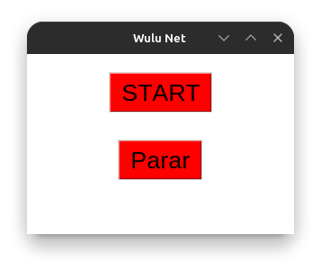

Nossa equipe está constantemente desenvolvendo soluções inovadoras para facilitar cálculos e automações no dia a dia. Abaixo, você pode conhecer alguns dos nossos projetos e baixá-los para uso.
LEI DE OHM
Criamos um programa que auxilia no cálculo da Lei de Ohm, facilitando o entendimento e a aplicação dessa importante equação na eletricidade.
- Download disponível aqui: Baixar arquivo py
AUTOMAÇÕES COM PYAUTOGUI
Este projeto explora o poder do PyAutoGUI para automatizar tarefas repetitivas no computador, tornando os processos mais ágeis e eficientes.
- Download disponível aqui: Baixar arquivo py
EQUAÇÕES DO SEGUNDO GRAU
Desenvolvemos um programa que resolve equações do segundo grau automaticamente, fornecendo as raízes da equação de maneira rápida e precisa.
- Download disponível aqui: Baixar arquivo py
CALCULADORA TKINTER
Uma calculadora desenvolvida com Tkinter para facilitar cálculos básicos e avançados em uma interface gráfica intuitiva e funcional.
- Download disponível aqui: Baixar arquivo py
WuluNet
Um projecto que usa ferramentas poderosas como adb, biblioteca os em python, arquivos csv para tentar números aleatórios de cartão de saldo da Africell. O mesmo projecto possui várias formas de se usar além desta citada.
Tudo começa com uma tela básica

Esta tela básica do WULU NET representa oque nós achamos ou vemos quando abrimos a aplicação. Assim que precionarmos Start tudo começa. Ele começa a testar os números aleatórios no seu celular automaticamente.
Requisitos Necessários
- Celular Conectado ao computador
- Depuração USB activado
- Ferramenta ADB instalada
Acessar ferramenta no GitHub